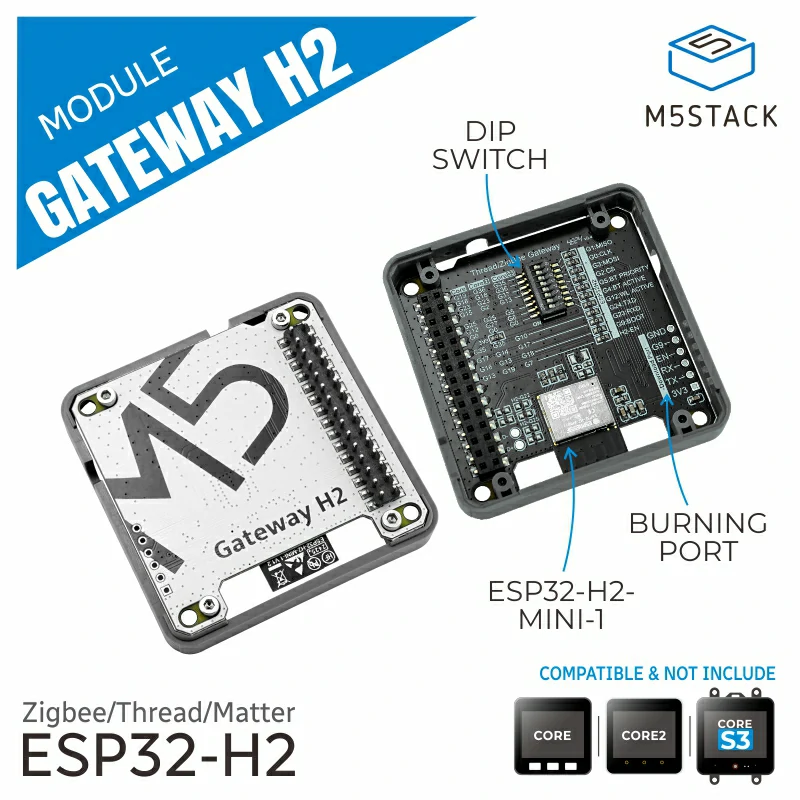
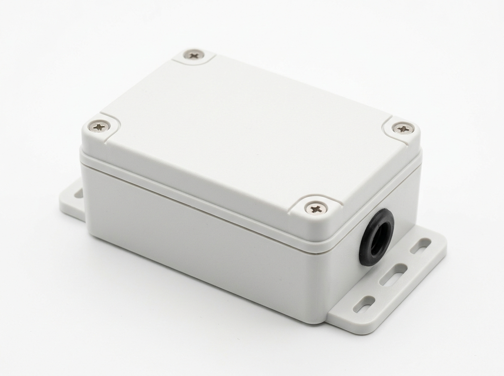
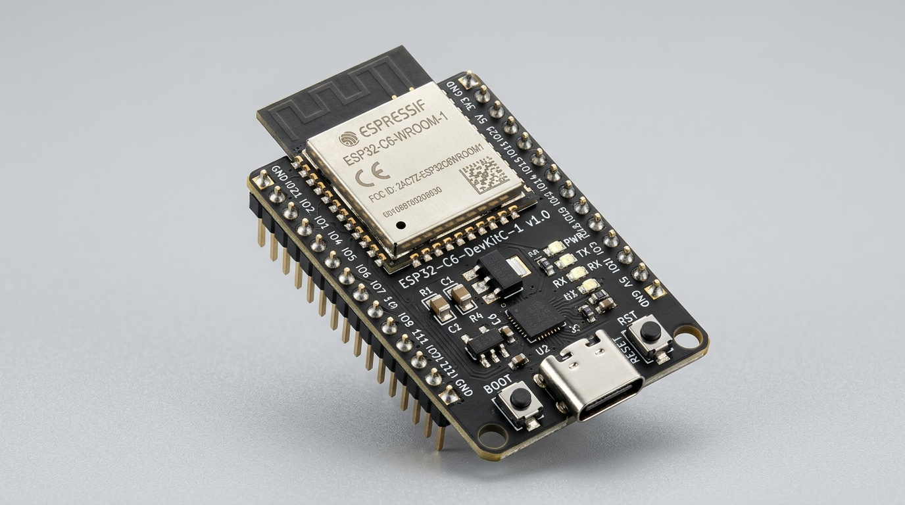
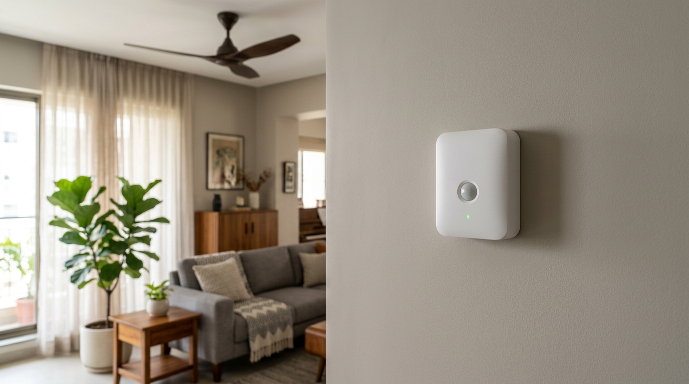

Bill of Materials & Procurement Plan
Hardware purchasing plan organized strictly according to the five physical installation stages. Server and Thread Border Router infrastructure are stood up first on the bench, establishing the local environment required to pair Matter-over-Thread sensors before touching mains switchboards. All parts are sourced directly from verified Indian distributors with zero import delays.
For the complete architectural hardware breakdown categorized by individual room automation rules (Hallway, Study, Bathroom, and Central Hub), see the dedicated Hardware by Automation Pattern Guide →.
To prevent stranded parts and ensure every component has an active testbed waiting for it, procurement follows the exact chronological progression of the build: Stage 1 (Server Setup) → Stage 2 (Thread Border Router) → Stage 3 (Sensor Bench Build) → Stage 4 (Switch Plates) → Stage 5 (Mounting & Tuning). Hardware already on hand is cataloged at ₹0 with verified spare links preserved.
Stage 1 — Server Setup Hardware (SRV-1 / SRV-2) · ₹0 (On Hand)
The central Home Assistant local server. All baseline hardware (Radxa Zero 3E single-board computer, power supply, 32GB endurance MicroSD card, and Ethernet patch cable) is already on hand in the lab. Verified Indian store links are cataloged below for spare parts or second-node deployment.
| Component | Item & Preview | Store / Buying Link | Stock Status | Est. |
|---|---|---|---|---|
| SRV-1 / SRV-2 Server SBC |  Radxa Zero 3E Single Board Computer (RK3566, GbE) Radxa Zero 3E Single Board Computer (RK3566, GbE) | Evelta → · Fab.to.Lab → | On Hand | ₹0 (₹2,800 ref) |
| Storage OS & DB Card | SanDisk 32GB High Endurance MicroSD (A1/A2 Class 10) | Robu.in → | On Hand | ₹0 (₹380 ref) |
| Power Supply SBC Power | 5.1V 3A USB-C Regulated Power Adapter | Robu.in → | On Hand | ₹0 (₹450 ref) |
| Ethernet LAN Link | Cat6 Gigabit Ethernet Patch Cord (RJ45, 1m) | Robu.in / Amazon India | On Hand | ₹0 (₹150 ref) |
| Jumpers Interconnect | 40-pin GPIO DuPont Jumper Wires (F2F) (INV-06) | robobazar.in | On Hand | ₹0 |
| Stage 1 Server Setup Subtotal | ₹0 (All on hand) | |||
Flash Armbian 13 Minimal, start Docker Home Assistant Container, and verify offline UI responsiveness at http://127.0.0.1:8123 with the router WAN unplugged before ordering external radios. See the step-by-step terminal walkthrough in Stage 1 · Server Setup Guide →.
Stage 2 — Thread Border Router Hardware (BR-1) · ₹889
Hardware for the central IEEE 802.15.4 Thread Border Router. The M5Stack Gateway Module H2 connects directly to the Radxa Zero 3E UART2 pins with clean 3.3V logic levels, requiring zero USB-to-UART conversion chips and zero custom firmware flashing.
| Component | Item & Preview | Store / Buying Link | Stock Status | Est. |
|---|---|---|---|---|
| BR-1 Thread router Live · Leader |  M5Stack ESP32-H2 Gateway Module (SKU M141)Pre-flashed factory RCP firmware · 3.3V UART · IEEE 802.15.4 + BLE 5.0 | Robu.in → | On Bench · Live | ₹889 |
| Interconnect UART Wiring | 4× Female-to-Female DuPont Jumpers (3.3V, GND, TX, RX) (INV-06) | robobazar.in | On Hand | ₹0 |
| Stage 2 Thread Border Router Subtotal | ₹889 | |||
Wire the module to Radxa UART2 (Pins 1, 6, 8, 10), launch the official otbr-agent Docker container, form the Thread mesh dataset, and verify Home Assistant Thread integration at http://127.0.0.1:8081. See the full configuration script in Stage 2 · Thread Border Router Guide →.
Stage 3 — Sensor Bench Build Hardware (PS-1 & DS-1) · ₹3,447
Bench-assembled Matter-over-Thread sensors. Includes the authentic Sentinel mmWave presence sensor (PS-1) for the Study Room and the DIY ultra-low-latency door contact sensor (DS-1) for the Bathroom. Both nodes join the active Stage 2 Thread mesh via native Matter commissioning.
| Component | Item & Preview | Store / Buying Link | Stock Status | Est. |
|---|---|---|---|---|
| PS-1 Presence sensor Study Room |  HLK-LD2410S 24GHz Millimeter-Wave Radar Sensor HLK-LD2410S 24GHz Millimeter-Wave Radar Sensor | Robu.in → | In Stock | ₹639 |
 Seeed Studio XIAO BLE nRF52840 Dev Board Seeed Studio XIAO BLE nRF52840 Dev Board | Robocraze → | In Stock | ₹1,149 | |
| Witty Fox 3.7V 2,000 mAh Prismatic LiPo Battery | Robocraze → | In Stock | ₹256 | |
 Sentinel Custom 2-Layer Reference PCB Sentinel Custom 2-Layer Reference PCB | LionCircuits / JLCPCB | Gerbers Ready | ₹150 | |
| ST LDLN030G33R Ultra-Low Noise LDO & Passives (C1–C4, R1, JST) | Mouser India / Robu.in | In Stock | ₹68 | |
 Sentinel 3D Tilt Enclosure (Custom Print) | Sentinel FreeCAD STLs → | Self 3D Print / Local Hub | ₹200 | |
| DS-1 Door contact sensor Bathroom |  Hardwired Dummy Channel Sensor (Default)MC-38 Magnetic Reed Switch (₹57) + 2-Core Insulated Wire (₹40) Wired to Bathroom Switchboard S2 · 0ms · 0 batteries · Sub-₹100 | Robocraze MC-38 → · Local Electrical Store | In Stock | ₹97 |
| Alternative (Wireless): DIY Matter over Thread Kit XIAO ESP32-C6 (₹672) + MC-38 (₹57) + 2000mAh Battery (₹256) · Thread mesh | Robocraze XIAO C6 → · Battery → | In Stock | ₹985 | |
| Alternative (Zigbee): SONOFF SNZB-04P Zigbee Door Sensor Turnkey off-the-shelf · 5-yr CR2477 coin cell · <80ms latency | Sonoff.in → | In Stock | ₹1,825 | |
| Stage 3 Sensor Bench Subtotal | ₹3,447 (with Option 1 DIY Matter kit) | |||
Solder the Sentinel PCB, flash Sentinel firmware via drag-and-drop UF2, flash ESP-Matter on XIAO ESP32-C6, and commission both Matter-over-Thread sensors into Home Assistant via QR code. Confirm sub-100ms occupancy and door state transitions on the bench. See Stage 3a · Presence Sensor Guide and Stage 3b · Door Sensor Guide →.
Stage 4 — Switch Plates Hardware (SW-1) · ₹3,897
Decentralized in-wall smart switch plates replacing conventional modular switchboards across all three rooms (Hallway, Study Room, and Bathroom). Each Tinxy module controls up to 4 relay circuits and 1 capacitive fan regulator, communicating locally over Wi-Fi while preserving 100% mechanical rocker switch override when the network or server is offline.
| Component | Item & Preview | Store / Buying Link | Stock Status | Qty & Est. |
|---|---|---|---|---|
| SW-1 (Hall) Hall Switch |  Tinxy 4+1 Fan Smart Switch (ESP8266 Local Wi-Fi) Tinxy 4+1 Fan Smart Switch (ESP8266 Local Wi-Fi)Controls 4 lighting relays + 1 speed-regulated fan node | tinxy.in India → | Mains Check | 1 × ₹1,299 |
| SW-1 (Study) Study Switch | Tinxy 4+1 Fan Smart Switch (ESP8266 Local Wi-Fi) Controls 4 lighting relays + 1 speed-regulated fan node | tinxy.in India → | Mains Check | 1 × ₹1,299 |
| SW-1 (Bath) Bathroom Switch | Tinxy 4+1 Fan Smart Switch (ESP8266 Local Wi-Fi) Controls 4 lighting relays + 1 exhaust fan node | tinxy.in India → | Mains Check | 1 × ₹1,299 |
| Stage 4 Switch Plates Subtotal | ₹3,897 | |||
Electrician verifies neutral conductor in each switch gang box (O-11), wires Tinxy modules, tests physical rocker override with breaker on and server offline (O-18), and configures local Home Assistant REST/MQTT controls (O-10). See Stage 4 · Switch Plates Guide →.
Stage 5 — Mounting, Tuning & Enclosures · ~₹500
Hardware fixings, adhesives, and mounting accessories required for permanent physical deployment of the bench-verified sensors and server SBC enclosure.
| Item | Description & Preview | Store / Source | Stock Status | Est. Cost |
|---|---|---|---|---|
| 3M VHB Tape Adhesive Mount |  3M VHB Heavy-Duty Double-Sided Foam Tape (5m roll)Vibration-proof mounting for DS-1 door contact sensor & radar swivel base | Amazon India / Local Hardware | In Stock | ₹180 |
| Wall Anchors & Screws Enclosure Fixings | M3 / M4 Nylon Wall Plugs with Rust-Resistant Screws (Pack of 20) Secure wall fastening for Sentinel 3D tilt bracket | Local Hardware Store | In Stock | ₹120 |
| SBC Server Case Radxa Protection | Radxa Zero 3E Acrylic / 3D Printed Enclosure with Heatsink Shields 40-pin GPIO jumper connections and assists passive cooling | Robu.in / Local 3D Hub | In Stock | ₹200 |
| Stage 5 Mounting & Enclosures Subtotal | ~₹500 (or on-hand workshop stock) | |||
Affix PS-1 in the Study Room angled downward avoiding direct ceiling fan wash, mount DS-1 on the bathroom door frame (<5mm gap), calibrate LD2410 radar detection gates to eliminate ceiling fan false positives, and verify full automation state machines (HL-01, ST-01, BA-01). See Stage 5 · Mounting & Tuning Guide →.
Complete Bill of Materials Summary
| Stage | Primary Hardware Components | Role & Protocol | Cost (INR) | Status |
|---|---|---|---|---|
| Stage 1 · Server Setup | Radxa Zero 3E + 32GB MicroSD + 5.1V 3A PSU + Cat6 (SRV-1) | Debian 13 Minimal + Docker Home Assistant Container | — | On Hand (₹0) |
| Stage 2 · Thread Border Router | M5Stack ESP32-H2 Gateway Module (SKU M141) (BR-1) | IEEE 802.15.4 Thread Leader Mesh (UART2) | ₹889 | On Bench · Live |
| Stage 3 · Sensor Bench Build | 1× Sentinel mmWave Kit (₹2,462) + 1× DIY Matter Door Kit (₹985) (PS-1 / DS-1) | Matter over Thread Battery End Devices (<100ms) | ₹3,447 | In Stock / Ready |
| Stage 4 · Switch Plates | 3× Tinxy 4 Node Smart Switches with Fan Regulators (SW-1) | Local Wi-Fi + Independent Mechanical Overrides | ₹3,897 | Mains Check |
| Stage 5 · Mounting & Enclosures | 3M VHB Tape, M3/M4 Wall Anchors, SBC Protective Case | Physical Wall Fixings & Fan Gate Calibration | ₹500 | Workshop Stock |
| Optional: Bathroom PIR Backup | HC-SR501 PIR Sensor Module | Shower Stall Secondary Motion Trigger | ₹120 | Optional |
| Total Core Hardware Investment (Stages 1–4) | ₹8,233 | ₹8,733 with Stage 5 mounting · ₹8,353 with PIR | ||
Plus electrician labour for wall switchboard installations — budget roughly ₹1,000–1,500. Detailed component documentation: presence sensor · door contact sensor · smart switch · server · Thread router · hardware by pattern.